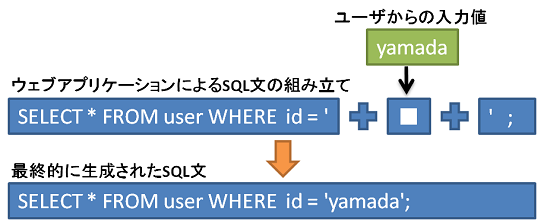
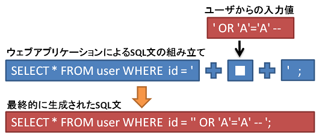
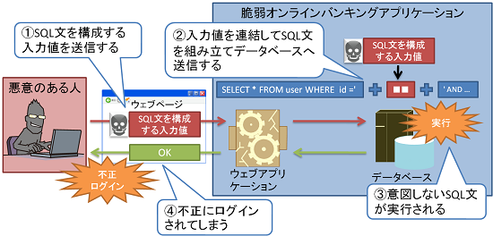

SQLインジェクション攻撃の原理
この章ではSQLインジェクション攻撃の原理を学びます
原理解説
まずは、文字列リテラルに対するSQLインジェクションの脆弱性の原理を理解するために、基礎知識としてSQLのリテラルについて学習します。
文字列リテラルとは
リテラルとは、次のSQL文中の「'yamada'」のような定数のことをいいます。また、文字列としてのリテラルのことを文字列リテラルと呼びます。
SELECT * FROM user WHERE id = 'yamada';
では次に、文字列リテラルに対するSQLインジェクションがどのようにして起きてしまうのか見てみましょう。
文字列リテラルに対するSQLインジェクションの原理
文字列リテラルに対するSQLインジェクションの脆弱性とは、ウェブアプリケーションが文字列リテラルにユーザからの入力値を連結してSQL文を組み立てることにより、意図しないSQL文を実行してしまうことで、データベースを不正に操作されてしまう問題です。
この脆弱性がどのように悪用されてしまうのか、次の図を使って見てみましょう。
図 2は、指定したIDの個人情報をuserテーブルから取得するSQL文を、ユーザからの入力値を利用して文字列連結により組み立てる例です。このとき、入力値に「' OR 'A'='A' --」という文字列を与えると、次のようなSQL文が組み立てられることになります。
入力値の先頭のシングルクォートでidの文字列リテラルを終端し、OR演算子を付け加えて条件をTRUE（真）にすることで、userテーブルの全てのレコードが取得されることになります。
末尾の「--」以降はコメントとして無視されます。
このように、入力値にSQL文を構成する入力値やSQLコメントを含ませることでSQL文の意味を変更され、意図しないSQL文を実行されてしまう可能性があります。
次の図で文字列リテラルに対するSQLインジェクションによって、オンラインバンキングへ不正ログインが行われる例を見てみましょう。

- 悪意のある人がログイン時に、SQL文を構成する入力値を送信します。
- ウェブアプリケーションは、①の入力値を連結してSQL文を組み立て、データベースへ送信します。
- データベース上で意図しないSQL文が実行され、不正な情報を返します。
- その情報をウェブアプリケーションが利用することで、不正にログインされてしまいます。
悪意のある人によって不正にログインされた場合、本人でなければ利用できない操作を行われてしまいます。
以下のサイトも参考にしましょう
では次に、ここまで学習したことをふまえて【脆弱オンラインバンキングアプリケーション】を例に、疑似的に攻撃をし、動作を確認していきましょう。